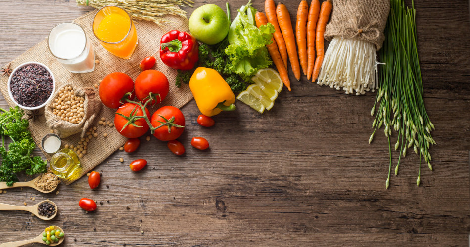

Click Here For More...
What Is Nutrition...?
Have you ever heard the expression, 'you are what you eat?' While we can't take this literally, this simple saying contains a lot of truth.The foods you choose to eat determine which nutrients your body will receive and in what quantities. Nutrients are substances that allow your body to make energy, build and maintain tissues, and regulate bodily processes. If you eat a healthy diet filled with a variety of high-nutrient foods, you are more likely to enjoy good health than if you eat a poor diet that is lacking in nutrients. This lesson will provide an overview of nutrition, which is the process of taking in nutrients from foods, by looking at the six classes of nutrients:Carbohydrates,Lipids,Proteins,Water,Vitamins,MineralsWhat is good nutrition? Good nutrition means your body gets all the nutrients, vitamins, and minerals it needs to work its best. Plan your meals and snacks to include nutrient-dense foods that are also low in calories.
Tips for eating well:
Eat plenty of fruit To get the benefit of the natural fiber in fruits, you should eat fruit whole rather than as juices.
Eat plenty of vegetables Eat a variety of colors and types of vegetables every day.
Eat plenty of whole grains At least half of the cereals, breads, crackers, and pastas you eat should be made from whole grains.
Choose low fat or fat free milk These provide calcium and vitamin D to help keep your bones strong.
Choose lean meats Lean cuts of meat and poultry have less fat and fewer calories but are still good sources of protein.
Try other sources of protein Try replacing meats and poultry with fish, beans, or tofu.